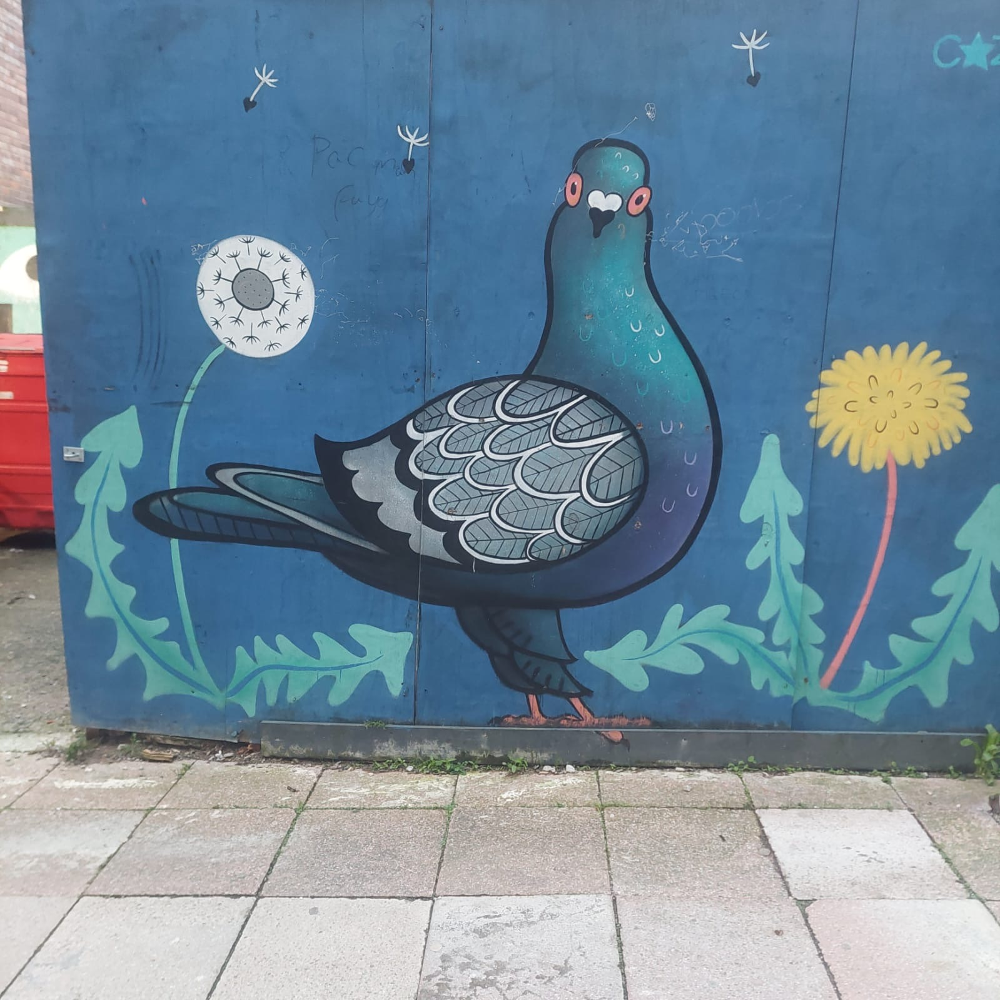
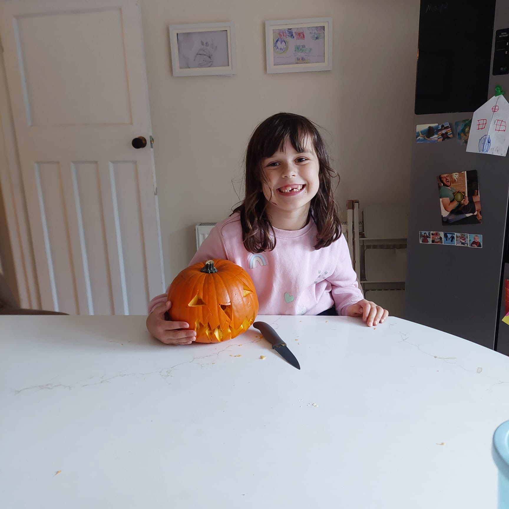
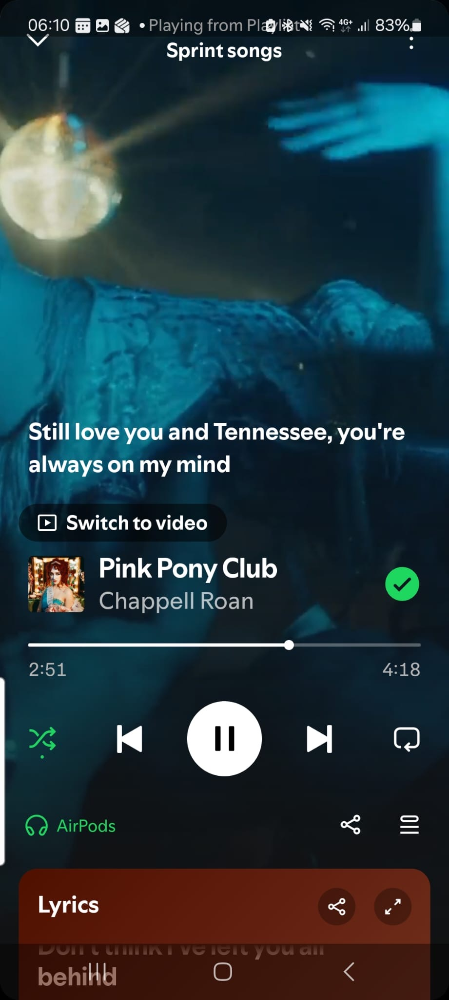
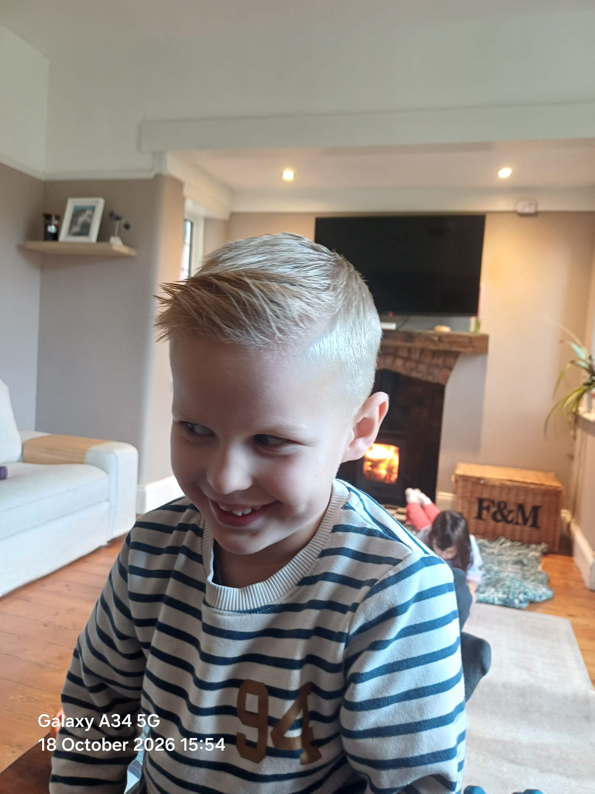
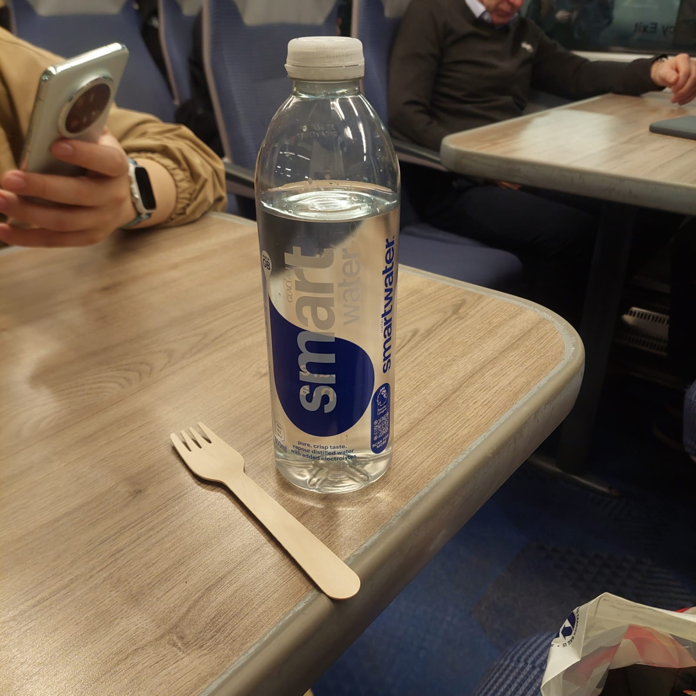
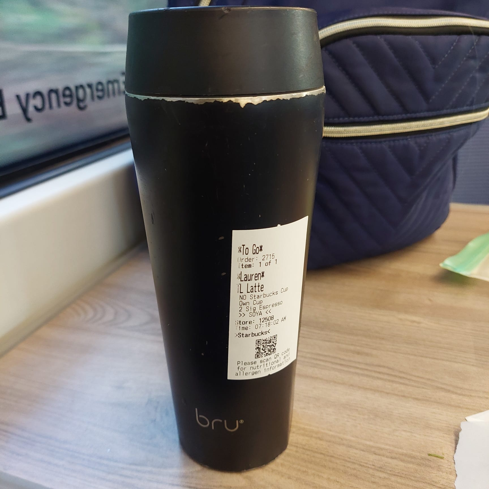

A little light on a difficult day.

The quiet determination to do it yourself.

Songs come with their own memories.
There were several moments this month that invited you to look again. A bottle you’d thought was an unnecessary, unsustainable purchase became a welcome rescue at the gym. A team that rallied round in a small practical way reminded you just how much support can be woven into ordinary moments. And the little things you noticed — a squirrel, a mural, a phrase that stayed with you — all seemed to carry a quiet kind of wisdom.
Connection showed up in lots of different ways. Your WW group made you feel valued when you shared your story. Your team rallied round when the coffee beans ran out, bringing warmth to a day that could have felt flat. A comment from a stranger or a shared joke with someone close to you had a way of shifting your mood and reminding you that you are not carrying everything alone.
There was plenty of laughter, too. A mischievous Tesla prank, Jess’s humour, some truly terrible school photos, and a pigeon mural that managed to lift a difficult day. These weren’t monumental events, but they were exactly the sort of moments that keep a month feeling alive.
And amongst all of this, there were moments of appreciation: Jess’s perseverance with her pumpkin, Ben’s affection expressed through pancakes, and the barista whose compliment felt so kind it stayed with you. October seemed to be full of small gestures that gently reminded you of what matters.

Your son’s lovely appreciation.

Not everything is as it first seems.

A compliment that stayed with you.